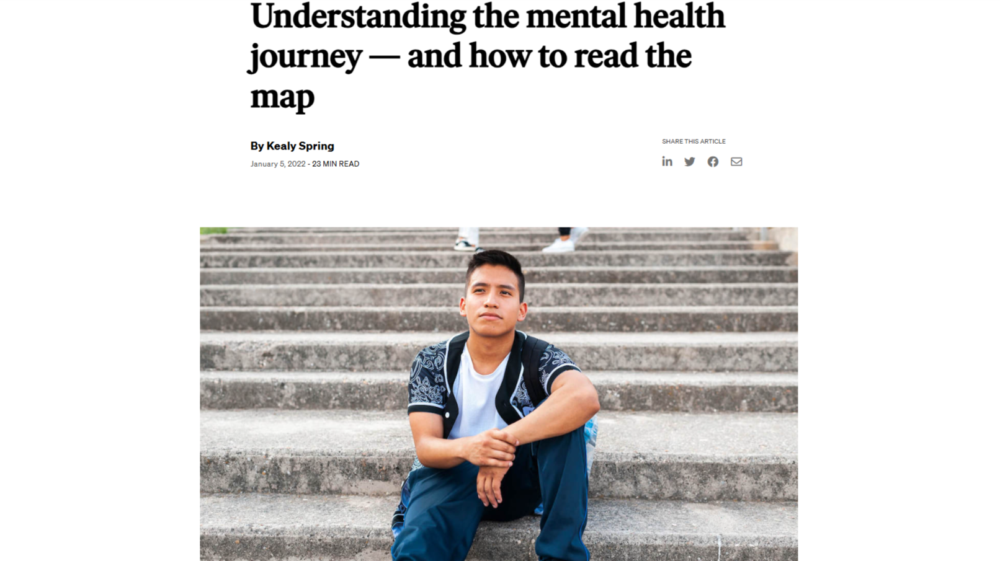
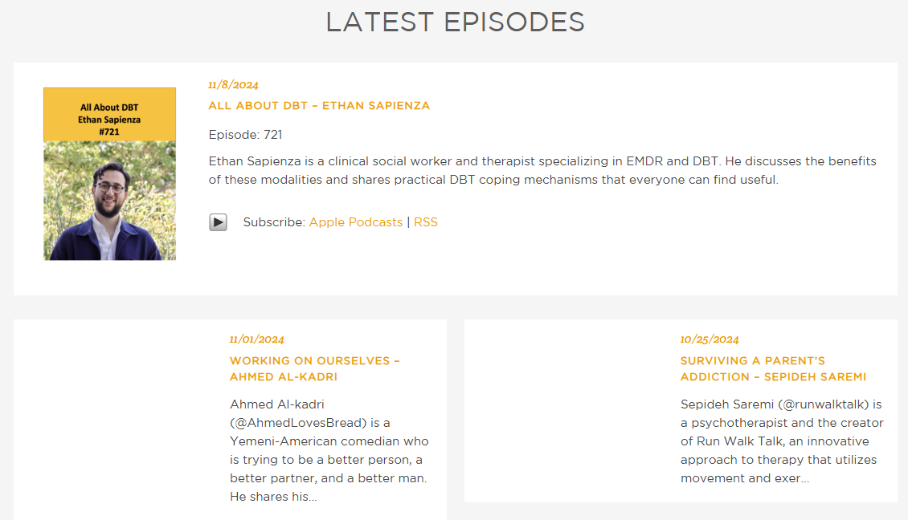

Videos: Personal Well-Being Journeys
My Mental Health Journey: BPD & OCD, The Steps I’m Taking To Heal
A personal journey with Borderline Personality Disorder and OCD.
Articles: Inspiring Well-Being Stories
How to Find Success in Your Mental Health Journey
Finding success in tracking feelings and setting mental health goals.

Understanding the mental health journey — and how to read the map
Exploring the mental health journey and understanding personal needs.
Podcasts: Conversations on Mental Health

All About DBT - Ethan Sapienza
Exploring mental illness, trauma, and self-compassion through stories.